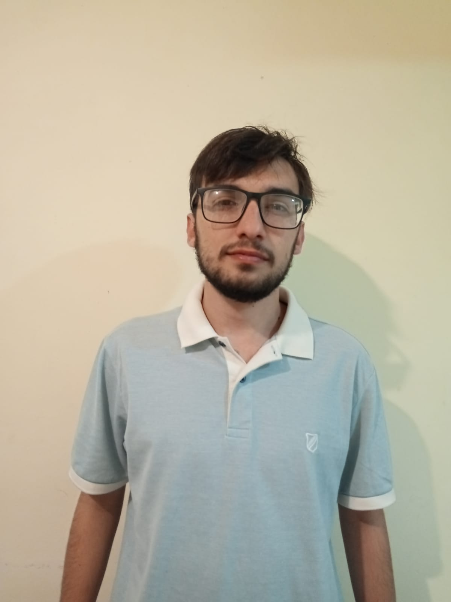

<section id="sobreMi" class="text-center">
    <div class="clearfix">
      
      <h1>Sobre Mi</h1>

    <h2>Soy Facundo Abel Salaberry, tengo 24 años. Naci en Rufino, Santa Fe, donde termine la secundaria y me fui a estudiar a Rosario.</h2>
    <h2>Soy un apasionado por las computadoras desde chico y programar es algo que me gusta</h2>
    <h2>Estudie dos años abogacia, aprendi algo que no me gusto y me cambie para el lado de la tecnologia</h2>
    <h2>Hoy estoy estudiando Ingenieria electronica en la UNR y aprendiendo programacion por medio de Argentina programa</h2>
</div>

  </section>
